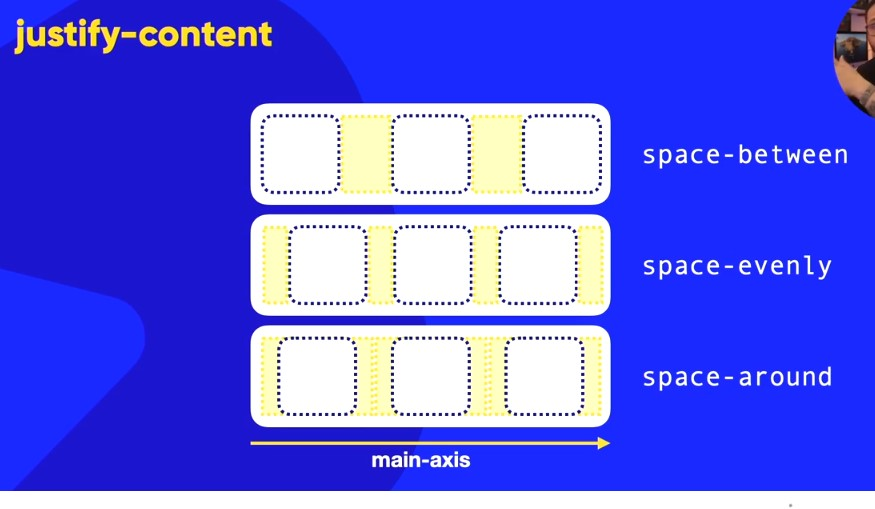
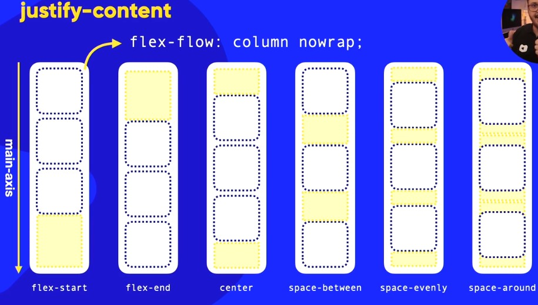
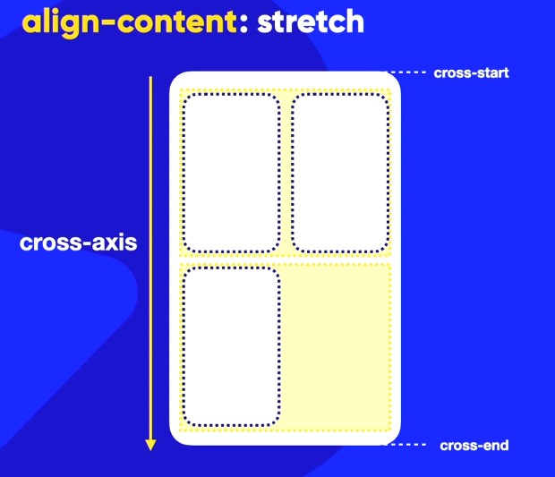
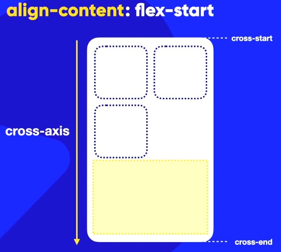
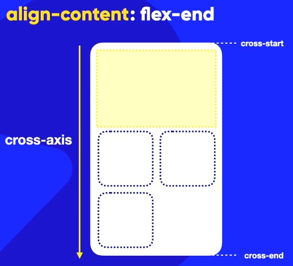
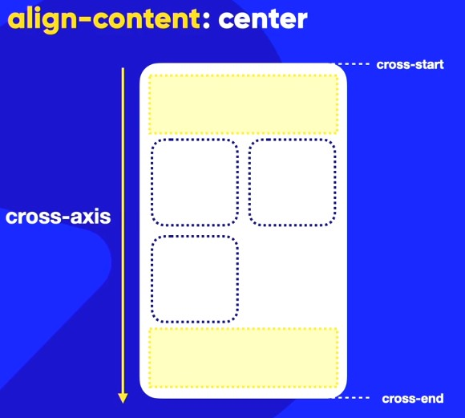
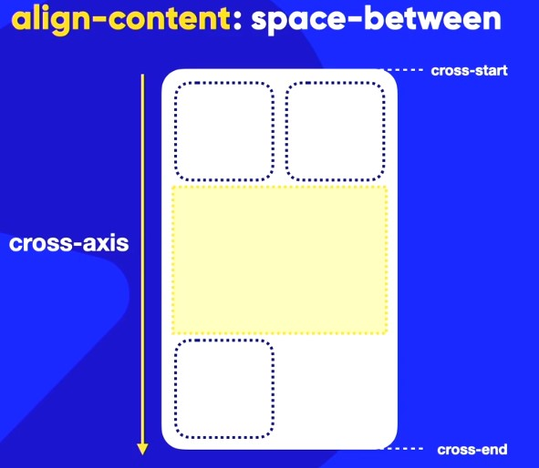
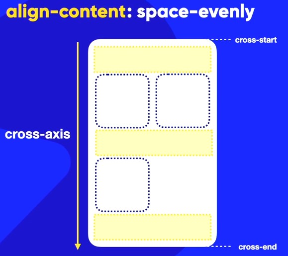
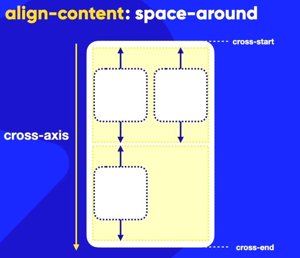

Alinhamento nos eixos Flexbox
O alinhamento no Flexbox é fundamentado na compreensão dos eixos principal (Main Axis) e transversal (Cross Axis), cujas direções dependem da propriedade flex-direction definida no container.
Alinhamento no Eixo Principal
O alinhamento no eixo principal (Main Axis) é controlado pela propriedade justify-content. Diferente do que muitos pensam, esse alinhamento não é obrigatoriamente horizontal; ele segue a direção definida por flex-direction. Se a direção for row, o alinhamento é horizontal; se for column, o alinhamento é vertical.
Comportamentos de Alinhamento
Os principais valores e seus impactos visuais são:
- Flex-start (Padrão): Os itens são agrupados no início do eixo principal (Main Start). Todo o espaço em branco sobra no final do container.
- Flex-end: Os itens são empurrados para o final do eixo (Main End), deixando o espaço vazio no início.
- Center: Os itens ficam centralizados no meio do eixo principal, com espaços iguais distribuídos nas duas extremidades.
- Space-between: O primeiro item é colado no Main Start e o último no Main End. O espaço disponível é dividido de forma idêntica apenas entre os itens intermediários.
- Space-evenly: É considerado o mais simétrico, pois cria espaçamentos exatamente iguais entre todos os itens, inclusive antes do primeiro e depois do último elemento.
- Space-around: Distribui o espaço de forma que cada item tenha a mesma quantidade de espaço ao seu redor. Na prática, isso faz com que o espaço entre dois itens seja o dobro do espaço nas extremidades (início e fim) do container.


Alinhamento no Eixo Transversal
O alinhamento no eixo transversal (Cross Axis) é o que define como os itens se posicionam na direção perpendicular ao fluxo principal. Se o container estiver em row (linha), o eixo transversal será vertical; se estiver em column (coluna), ele será horizontal.
Existem três propriedades fundamentais para controlar esse alinhamento: align-items, align-content e align-self.
Alinhamento de Itens Individuais (align-items)
Esta propriedade é configurada no container pai e dita o comportamento padrão de todos os seus filhos dentro de uma única linha.
- Stretch (Padrão): Diferente do eixo principal, o valor padrão aqui é o "esticar". Se os itens não tiverem um tamanho fixo, eles se expandirão para ocupar toda a dimensão do eixo transversal do container.
- Flex-start: Alinha os itens no início do eixo transversal (Cross Start).
- Flex-end: Alinha os itens no final do eixo transversal (Cross End).
- Center: Centraliza os itens no meio do eixo transversal.
Importante: O align-items não possui opções de espaçamento como space-between ou space-around.
Alinhamento de Conteúdo Empacotado (align-content)
Esta propriedade também é aplicada ao container pai, mas só funciona quando há quebra de linha (uso de flex-wrap: wrap ou wrap-reverse). Ela não alinha os itens individualmente, mas sim as linhas de itens como um todo.
- Stretch (Padrão): Distribui as linhas para que ocupem toda a altura disponível, esticando os itens se necessário.
- Flex-start: Todas as linhas são agrupadas no início do eixo transversal.
- Flex-end: Todas as linhas são agrupadas no final do eixo transversal.
- Center: Todas as linhas são centralizadas no meio do eixo transversal.
- Space-between: A primeira linha é colada no Cross Start e a última no Cross End, com o espaço restante distribuído igualmente entre as linhas intermediárias.
- Space-evenly: Distribui o espaço de forma que cada linha tenha espaçamentos iguais entre si e nas extremidades do container.
- Space-around: Distribui o espaço de forma que cada linha tenha a mesma quantidade de espaço ao seu redor, resultando em espaçamentos iguais entre as linhas e nas extremidades do container.
Distribuição de espaço: Diferente do align-items, aqui você pode usar space-between, space-around e space-evenly para gerenciar o espaço entre as linhas de conteúdo.







Alinhamento Individual (align-self)
O align-self é uma propriedade aplicada diretamente ao item filho. Ela permite que um elemento específico ignore a regra de align-items definida pelo pai e assuma um alinhamento próprio no eixo transversal. Os valores são os mesmos do align-items (flex-start, flex-end, center, stretch), com a adição do valor auto, que herda o comportamento definido no pai.
Resumo de Diferenciação
Para não confundir as propriedades, lembre-se desta lógica:
- justify-content: Controla o alinhamento dos itens no eixo principal do container.
- align-items: Controla o alinhamento dos itens no eixo transversal do container (em uma linha).
- align-content: Controla o alinhamento das linhas de itens quando há quebra de linha (quando há várias linhas/empacotamento).
- align-self: Controla o alinhamento individual de um item específico no eixo transversal (sobrepondo o pai).
justify-content: Alinha os itens ao longo do eixo principal (main axis). É utilizado para distribuir o espaço disponível entre ou ao redor dos itens na direção em que eles estão dispostos (por exemplo, horizontalmente em flex-direction: row).
align-items: Alinha os itens ao longo do eixo transversal (cross axis). Ele controla como os itens são posicionados dentro de suas respectivas linhas ou dentro do container, caso não haja quebra de conteúdo.
align-content: Alinha as linhas de conteúdo empacotado ao longo do eixo transversal. Esta propriedade só surte efeito quando o container possui múltiplas linhas (ou seja, quando o flex-wrap está definido como wrap ou wrap-reverse) e existe espaço livre no eixo transversal para distribuir entre essas linhas.
align-self: Alinha um item específico ao longo do eixo transversal (cross axis). Esta propriedade permite que um item ignore a regra de align-items definida pelo pai e assuma um alinhamento próprio.